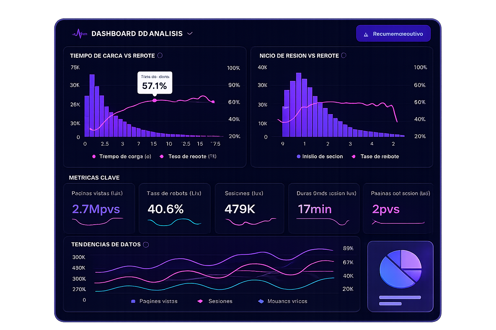
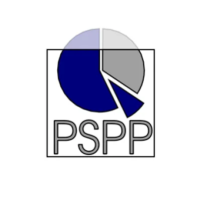

Estadística y
Análisis de Datos
con Rigor Científico
Apoyo académico especializado en SPSS, Jamovi, AMOS y PSPP para tesis e investigaciones. Procesamiento, organización e interpretación de datos con precisión.
+10
análisis
estadísticos
Entrega
24h
garantizada

ESPECIALISTA EN
IBM SPSS

El software estadístico
más usado en investigación
SPSS es el software de análisis estadístico más utilizado en ciencias sociales, salud, educación y negocios. Permite procesar grandes volúmenes de datos y obtener resultados precisos para tesis e investigaciones.
Brindamos apoyo en la organización, procesamiento e interpretación de datos, ayudando a aplicar correctamente las pruebas estadísticas según el tipo de investigación. También orientamos en la elaboración de tablas, gráficos y reportes de resultados.
Trabajamos con diferentes niveles de complejidad, desde análisis básicos hasta modelos más avanzados, adaptándonos a los requerimientos de cada curso o asesoría académica.

Cursos de Especialización
Estructura y rigor metodológico para tu investigación académica.
Metodología para la Investigación
Estructura, formulación del problema y normas de investigación.
Técnicas e Instrumentos
Elaboración y validación de encuestas y cuestionarios, escalas de medición y sistemas de baremo.
Trabajo de Investigación
Apoyo integral desde el planteamiento hasta las conclusiones y redacción.
Proyecto de Investigación
Estructuración de objetivos, hipótesis y justificación.
Psicometría
Análisis de pruebas psicométricas y transformación de resultados a niveles cualitativos (bajo, medio, alto) mediante baremos.
Servicios Estadísticos
Soluciones técnicas precisas para el procesamiento y análisis de datos de investigación.
Tablas Descriptivas
Elaboración de tablas con medidas de tendencia central y dispersión para resumir y analizar datos de forma clara y ordenada.
Pruebas Chi Cuadrado
Aplicación de la prueba de independencia para analizar la relación entre variables categóricas en investigaciones académicas.
Pruebas de Normalidad
Evaluación de la distribución de los datos mediante pruebas como Kolmogorov-Smirnov o Shapiro-Wilk, determinando si los datos siguen una distribución normal.
Reducción de Similitud
Apoyo en la mejora de la redacción de trabajos académicos mediante parafraseo y reestructuración de contenido, reduciendo similitud en sistemas como Turnitin.
Correlaciones
Análisis de la relación entre variables utilizando coeficientes como Pearson o Spearman, según el tipo de datos.
Tablas Cruzadas
Organización de datos en matrices de doble entrada para analizar la relación entre variables categóricas.
ANOVA
Análisis de varianza para comparar medias entre tres o más grupos y determinar diferencias significativas.
T's de Student
Prueba estadística utilizada para comparar medias entre dos grupos y evaluar diferencias significativas.
Kolmogorov-Smirnov
Prueba no paramétrica utilizada para evaluar la normalidad de los datos o comparar distribuciones.
Wilcoxon
Prueba no paramétrica para comparar dos muestras relacionadas cuando los datos no cumplen supuestos de normalidad.
Optimización Académica
Reducción de similitud (Turnitin) y parafraseo experto para asegurar originalidad.
Software que manejamos
Nos adaptamos al software que tu universidad o asesor requiera.
IBM SPSS
El más usado en investigación académica y científica a nivel mundial.
PrincipalJamovi
Alternativa moderna y gratuita, ideal para análisis rápidos y visuales.
AMOS
Modelado de ecuaciones estructurales para investigaciones avanzadas.

PSPP
Alternativa libre a SPSS, compatible con los mismos formatos de datos.
Minitab
Especializado en control de calidad y análisis de procesos estadísticos.
¿Cómo trabajamos?
Un proceso simple, transparente y enfocado en tu tranquilidad.
Nos contactas
Escríbenos por WhatsApp con los detalles de tu trabajo: tipo de análisis, datos disponibles y fecha de entrega.
Evaluamos tu caso
Revisamos tu base de datos y definimos el análisis más adecuado para tu investigación.
Procesamos los datos
Ejecutamos el análisis en SPSS o el software requerido, generando tablas, gráficos e interpretaciones.
Entregamos y revisamos
Te enviamos el trabajo completo y atendemos cualquier corrección hasta que quedes conforme.
¿Necesitas ayuda con
tu análisis estadístico?
Cuéntanos tu caso y te damos una solución rápida. Respondemos de inmediato por WhatsApp.